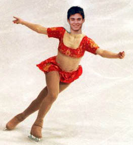
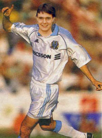
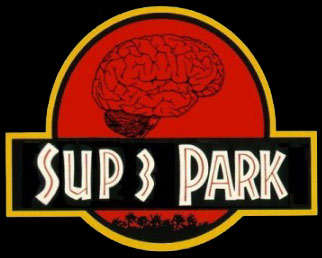
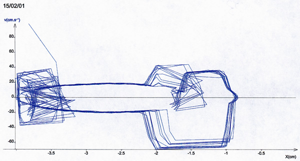
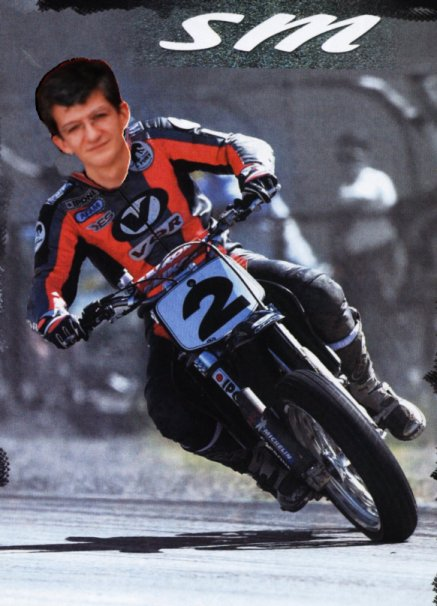
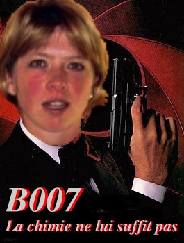

Notre cher Dublack est très sportif... Un bel exemple à suivre !


Un supporter du PSG qui trahit son club fétiche... N'est-ce- pas Mia ?

Les exploits de Dublack et Pépé

Pour les non-initiés, un portrait de phase est le tracé de la vitesse en fonction de la position. Ici le portrait de phase aurait du être une ellipse !! On vous assure que ce n'est pas truqué, Pépé et Dublack ont planté leur expérience et vous pouvez voir ce que ça a donné. Une chose est sûre : ce n'est pas une ellipse. Ensuite à vous de vous faire votre avis... Il parait même que les sup1 et les sup2 voient une guitare, une casserole etc... Les Sup3 voient autre chose eux, bizarre...

La deuxième vie de Smol
par Benoît
